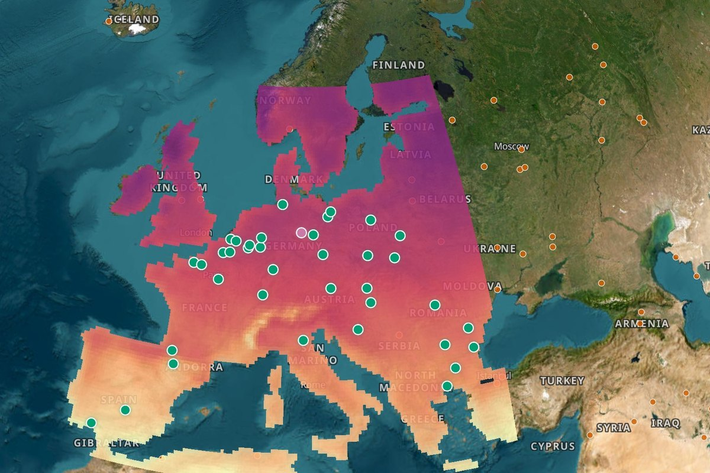
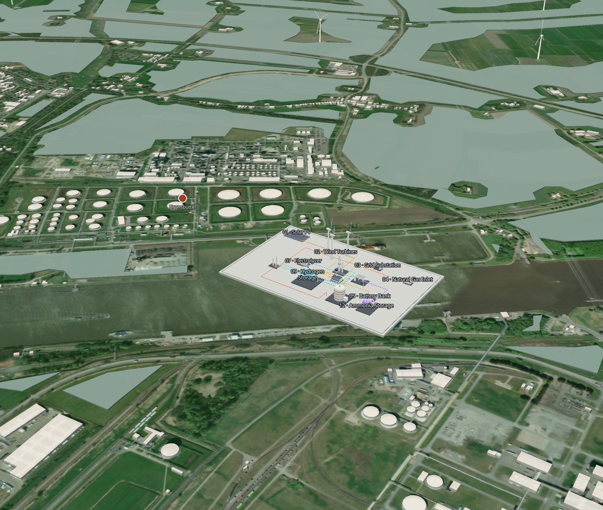
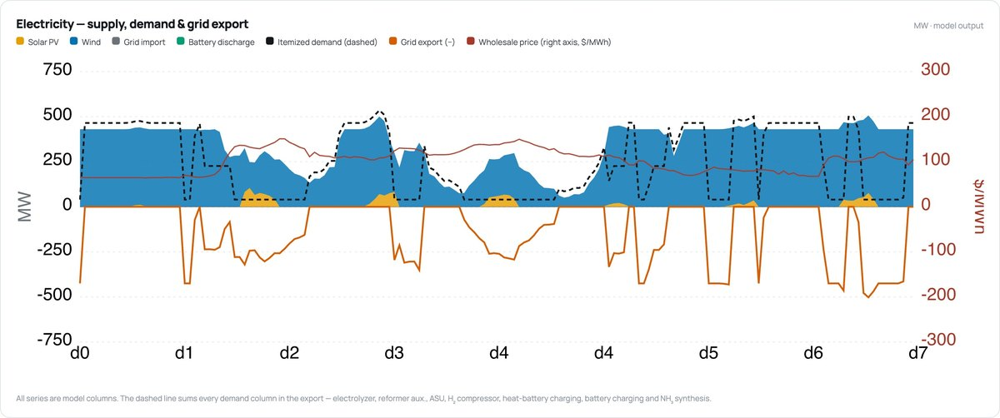
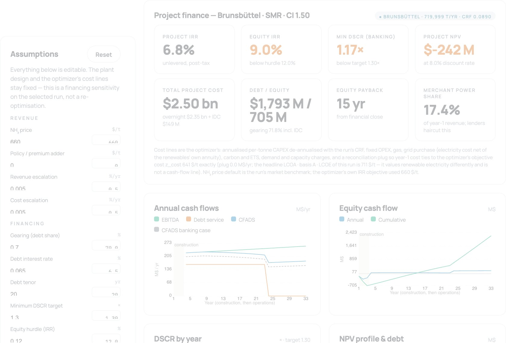

How far can we decarbonize without paying a green premium?
HOPS co-sizes and hourly-dispatches energy systems — renewables, storage, the grid and the process itself — against any carbon-intensity target, then reports the point where a hybrid clean-and-fossil system stops being the expensive option.
Sizing, dispatch and economics in a single solve.
Most pathways smooth over the hours that matter. HOPS solves every one of them and lets the engineering set the answer.
Co-sizing
Wind, solar, storage, electrolysis, reforming, capture and the process are sized together — not one after another.
Hourly dispatch
Every one of 8,760 hours is solved. Storage and turndown decide how much of the local resource is usable.
Sourced economics
Every cost, price and performance parameter carries its citation and status. Change one and watch the threshold move.
Four ways into the same model.
Every view reads from one parameter registry and one set of solved runs, so numbers agree wherever you meet them.
Every site, one globe
Modelled plants, requested sites, the global fleet and the renewable resource of every 0.25° cell, with industry layers beneath.

Walk the plant
Real terrain and buildings, the optimizer's build placed next to the existing works, live hourly flows of electricity, H₂ and product.

Every hour of the year
Supply, demand, storage and grid exchange for any carbon target, hour by hour across 8,760 hours.

Bankable, or not
Debt, equity, DSCR and policy credits year by year on top of the optimizer's cost lines — every assumption adjustable.

The last tonne is expensive. The first 20 to 40 % may cost nothing extra.
HOPS optimizes across the entire carbon-intensity spectrum, from fossil business-as-usual down to net zero, rather than solving only for a net- or near-zero endpoint. At each point it finds the least-cost plant configuration. This reveals the Economic Decarbonization Threshold: the level of decarbonization at which a hybrid clean-and-fossil plant becomes cheaper than business-as-usual. At the core is a hybrid energy-management optimizer that orchestrates electrons and molecules at hourly resolution across a full year — when to draw or export power, when to charge short- or long-duration storage, when to convert electricity into hydrogen and ammonia, and when to convert them back.
We look for scenarios where 20 to 40 % of emissions can be eliminated today at or below business-as-usual cost — enough to attract private capital and start driving costs down. Each round of deployment lowers technology costs and makes deeper decarbonization profitable in turn, so plants add clean capacity in stages toward full decarbonization by 2050. The first application is ammonia, in regions with high natural-gas and electricity prices where on-site renewables can both supply the plant and feed surplus power into the grid.
Three steps from a site to its threshold.
Pick a site and a target
Choose any modelled facility — or request a new one — and set the carbon intensity the product must meet.
Solve capacity and operation together
One mixed-integer program sizes every unit and dispatches it across 8,760 hours of local wind, solar, grid and fuel prices.
Read the threshold
Sweep the target and the cost-versus-carbon frontier appears. Where it meets the fossil baseline is the answer. Every parameter behind it is sourced.
Built to be checked.
Every figure on this site carries its source, its status and the date it was last regenerated.
Run it yourself.
Every modelled plant with its hourly dispatch, siting and finance in the browser — and any new site solved in the cloud from one click. No account, no upload.
For battery cell design, cost intelligence and technology roadmaps, see STEER's OpenCell (Stanford Energy · SLAC).